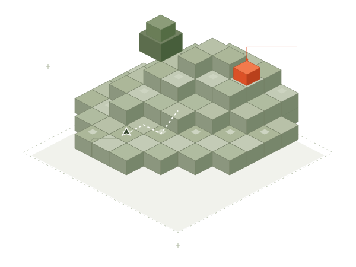

01
Start from zero.
A fresh agent session. A restored world snapshot. An empty inventory. Every scored attempt begins at the same defined starting point.
CONTROLLED STARTA benchmark for embodied agents
A simple task. An open world. Every action counts.
We test how AI agents turn what they see into what they do — inside Minecraft.

Y ↑X / ZWhat happened when we put an agent in the world.
| Objective | Agent | Outcome | Observed / target | Record |
|---|---|---|---|---|
Retrieve coalRun 009 · pilot |
CodexDesktop computer use | Target met | 4 / 1Coal | |
OBSERVED EVIDENCE Four coal in the hotbar.The selected-item label displayed “Coal” and the stack count displayed 4 in hotbar slot 9. INTERPRETATION The item objective was met. The run metadata did not confirm a fresh task, a clean world snapshot, an empty inventory, or excluded prior context. This is a pilot observation and is excluded from model comparisons. Download this record | ||||
Smelt iron ingotsRun 009 · continuation |
CodexSame agent & world | Incomplete | 0 / 3Iron ingots | |
OBSERVED EVIDENCE No iron ingots obtained.Visible inventory inspection showed no raw iron or iron ingots after the agent extended its branch mine. INTERPRETATION This attempt continued the coal pilot with the same world and context. It is not an independent benchmark run. The earlier coal outcome remains recorded separately. Download this record | ||||
iEarly observations, not a leaderboard. These pilots do not satisfy the clean-start protocol and are excluded from comparative scores. Model rankings will require independent, repeatable runs.
Minecraft leaves room for many solutions. The finish line stays fixed: obtain a specific item and keep it in your inventory.
The protocol is designed to make attempts repeatable while leaving the agent’s strategy open.
A fresh agent session. A restored world snapshot. An empty inventory. Every scored attempt begins at the same defined starting point.
CONTROLLED STARTThe agent uses the game screen, keyboard, and mouse. Navigation, crafting, mining, and recovery are all part of the task.
VISIBLE CONTROL ONLYA specified item and quantity, visibly retained in inventory. Record the outcome and evidence; keep setup failures out of the score.
BINARY COMPLETION03 / WHY MINEMARK
Knowing how to craft a pickaxe is one thing. Finding wood, navigating a landscape, making the tool, and recovering when a plan fails asks something more.
Minemark studies that gap between knowing and doing. Our starting point is item retrieval: a compact way to observe planning, spatial reasoning, and tool use through a clear outcome.
Explore the first observations